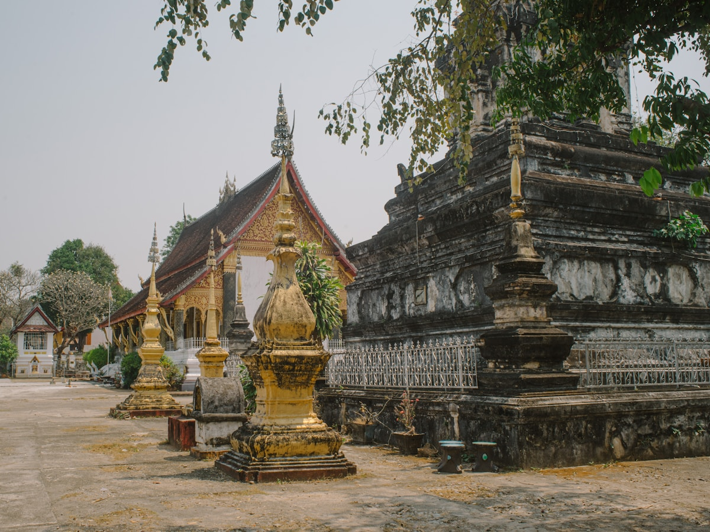
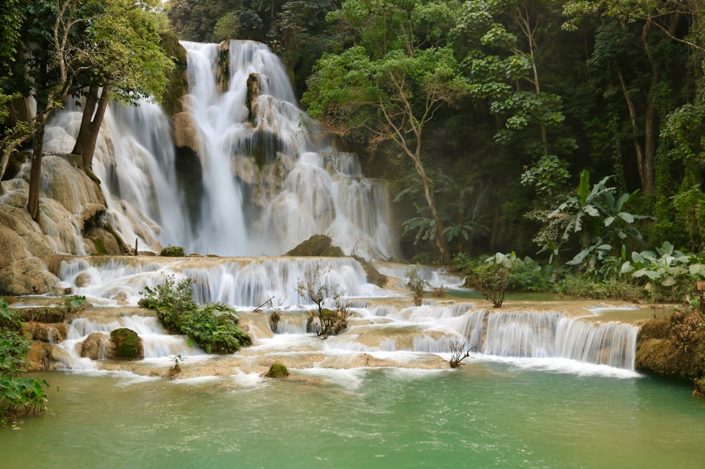
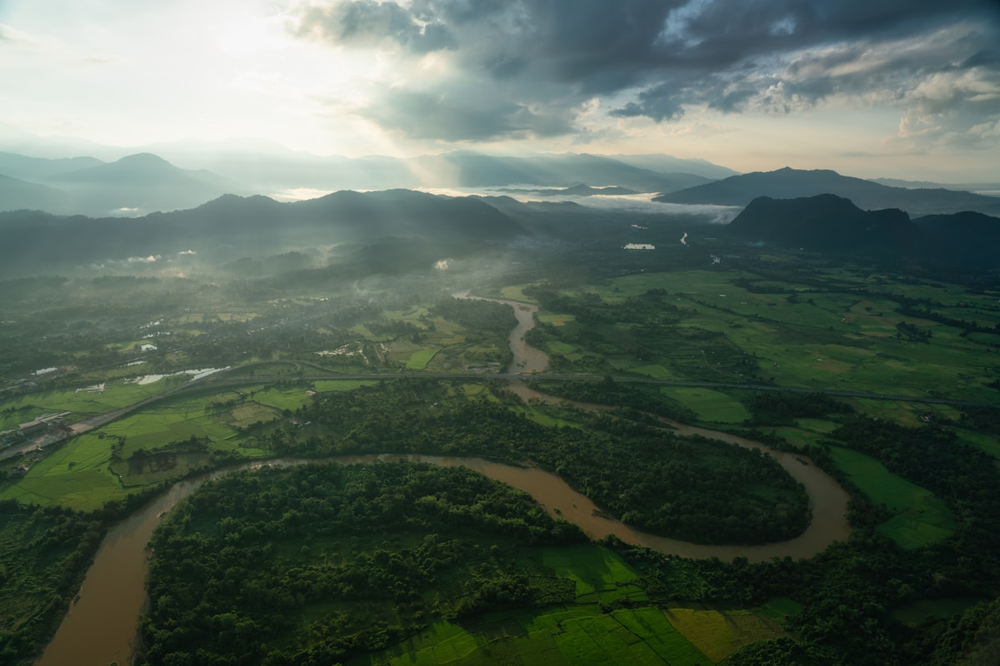
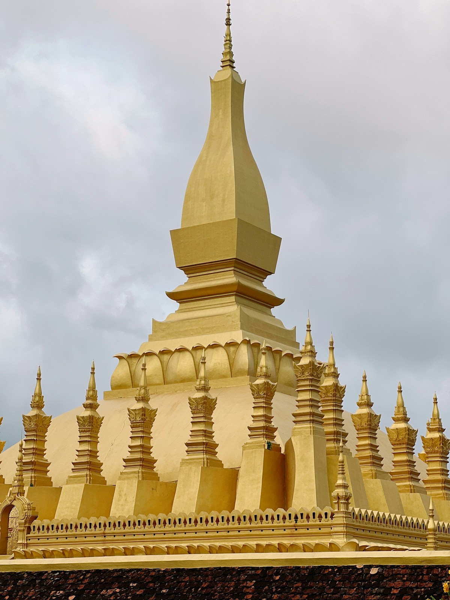
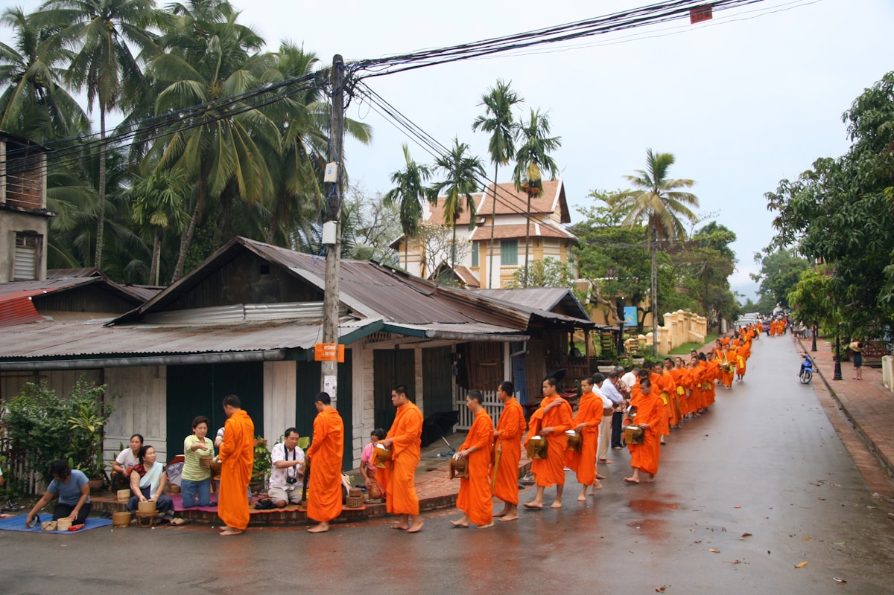
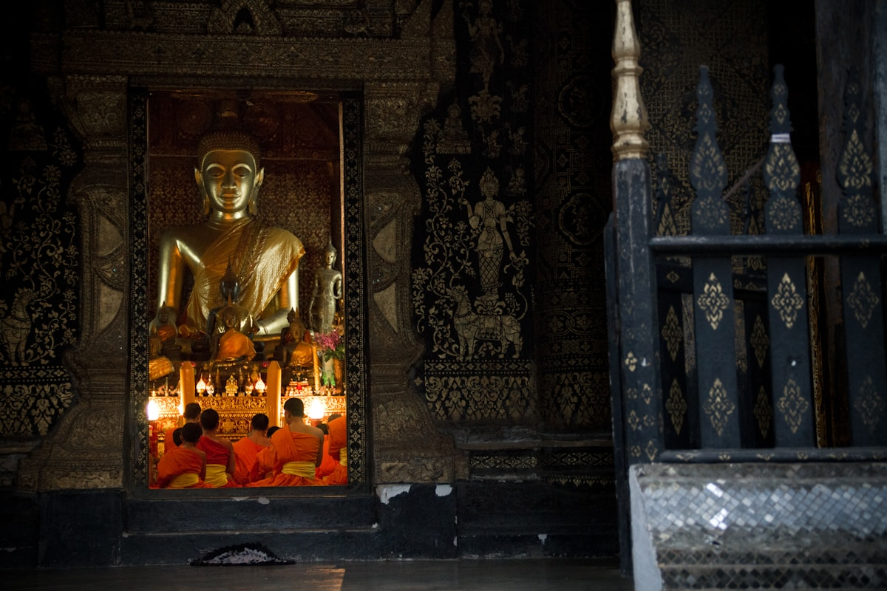
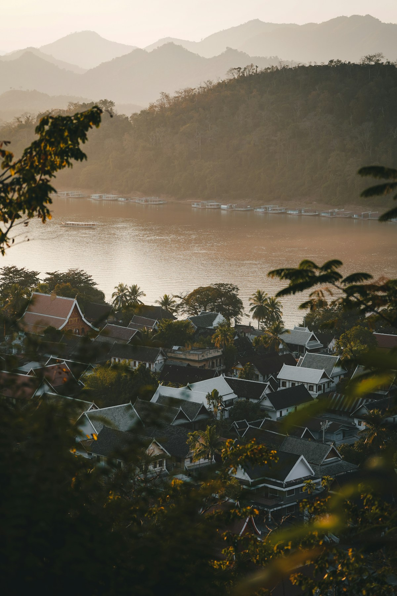
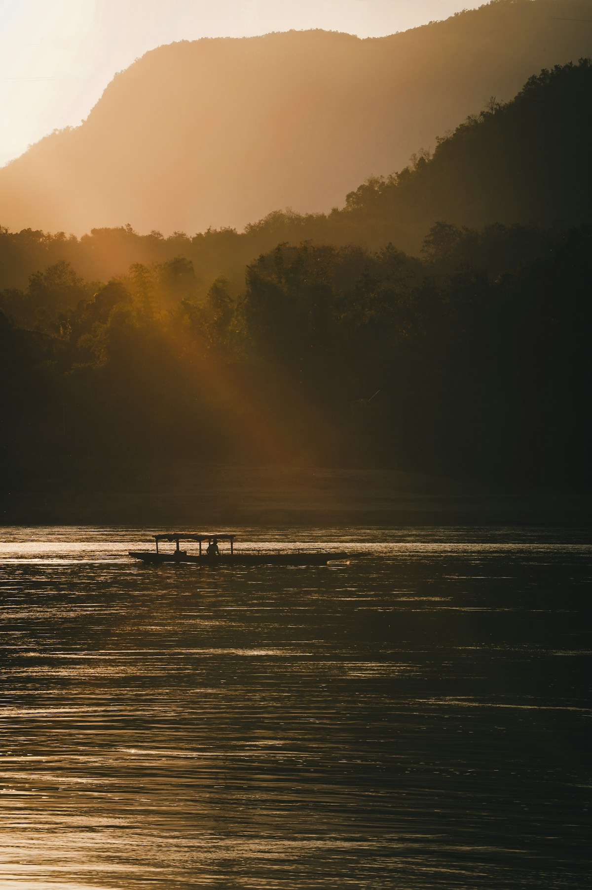

| 事项 | 结论 |
|---|---|
| 事项 | 结论 |
| 签证（最关键） | 中国护照免签 30 天；入境走免签通道即可，也可提前办电子签/落地签（20 美元）备选 |
| 推荐方案 | 琅勃拉邦 3 天 → 万荣 2 天 → 万象 2 天 → 返程 1 天 |
| 返程约束 | 第 8 天从万象瓦岱机场返京；万象机场离市区约 6 公里，预留 2.5h 值机 |
| 行程链 | 琅勃拉邦 → 万荣 → 万象（中老铁路高铁，琅勃拉邦–万象约 2.5h） |
| 预算（人均） | 经济 8000–12000 ／ 标准 15000–22000 ／ 舒适 30000–50000（人民币） |
| 三件提前事 | ① LCR Ticket App 注册并抢高铁票 ② 万荣热气球提前订 ③ 琅勃拉邦住宿提前 2 周 |
| 季节提醒 | 旱季（11–4 月）晴朗最适合热气球与漂流；4 月最热 35℃+，5–10 月雨季湄公河水位高 |
| 支付 | 基普现金为主（1 元 ≈ 2650 基普），万象/琅勃拉邦部分商家收微信与支付宝 |
以下为 8 天 7 晚的推荐节奏：以中老铁路高铁为骨架，从北到南推进。每日主景点 ≤2 个，琅勃拉邦放慢、万荣放开玩、万象收尾买手信。
| 日期 | 行程 | 过夜地 | 主题 |
|---|---|---|---|
| D1 抵琅勃拉邦 | 北京✈万象（约 6h），转高铁北上琅勃拉邦（约 2.5h），入住古城，夜市晚餐 | 琅勃拉邦 | 抵达+夜市 |
| D2 | 清晨布施 → 普西山日出 → 香通寺 → 老城法式街区漫步 | 琅勃拉邦 | 千年佛都 |
| D3 | 光西瀑布一日（泳池+熊救护中心）→ 湄公河日落船/竹桥 | 琅勃拉邦 | 瀑布日 |
| D4 | 高铁到万荣（约 1h），坦普坎蓝湖 → 南松河轮胎漂流 | 万荣 | 户外天堂 |
| D5 | 热气球日出（可选）→ 皮划艇/攀岩/溶洞，下午湄公河畔发呆 | 万荣 | 喀斯特运动 |
| D6 | 高铁到万象（约 1h），塔銮 → 凯旋门 → 湄公河夜市 | 万象 | 首都地标 |
| D7 | 香昆寺佛园 → 玉佛寺/国家博物馆 → 早市手信采购 | 万象 | 佛国收尾 |
| D8 返程 | 万象✈北京（直飞约 6h），到家休息 | — | 收尾 |
以下为 8 天全程的逐小时执行时间线，可当作「当天打开照着走」的清单。标注 ※ 的可选项视体力与天气取舍。
| 时间 | 事项 |
|---|---|
| 08:30–14:30 | 北京✈万象瓦岱机场（直飞约 6h，东航/老挝航空）。落地前 3 天内先在 immigration.gov.la 完成在线登记并保存二维码 |
| 15:00–16:00 | 机场→万象站（约 20 分钟），换乘中老铁路高铁北上琅勃拉邦（约 2.5h，二等座约 15 万基普），沿途喀斯特山景 |
| 18:30–19:30 | 抵达琅勃拉邦站（离古城约 8 公里），拼车/酒店接站进古城，入住湄公河畔或主街民宿 |
| 19:30–21:30 | 琅勃拉邦夜市：手工织布、老挝咖啡、椰子煎饼；晚餐老挝米粉+烤鱼 |
| 时间 | 事项 |
|---|---|
| 05:30–06:30 | 清晨布施：主街沿线的清晨化缘，数百僧侣列队接受糯米饭布施。摊点可买糯米饭（约 2 万基普/篮），跪坐低姿、不触碰僧侣 |
| 07:00–08:30 | 布施后回酒店早餐休整 |
| 09:00–10:30 | 普西山（Mount Phousi）：328 级台阶登顶，俯瞰湄公河与古城红屋顶，山顶金塔 |
| 10:30–12:00 | 香通寺（Wat Xieng Thong）：老挝最美寺庙，马赛克生命之树外墙+倾斜屋顶大佛殿，门票约 2 万基普 |
| 12:00–13:30 | 午餐：湄公河畔法式小馆（老挝菜+法棍三明治） |
| 14:30–17:30 | 老城法式街区漫步：王宫博物馆（约 3 万基普）、竹桥、手工纸伞坊；找个河边咖啡馆发一下午呆 |
| 18:00–19:30 | 湄公河日落：河畔长堤看日落，晚餐夜市烧烤+Beerlao 啤酒 |
| 时间 | 事项 |
|---|---|
| 08:00–09:00 | 包突突车/拼团出发光西瀑布（单程约 45 分钟，包车往返约 20–25 万基普，拼车约 5 万/人） |
| 09:30–12:00 | 光西瀑布（Kuang Si）：门票 6 万基普（约 23 元），多层碧绿钙华池+主瀑布，趁早下水人少，含园内接驳车 |
| 12:00–13:00 | 园区午餐：简餐+烤串，熊救护中心旁凉亭休整 |
| 13:00–14:30 | 熊救护中心（免费，含在门票内）：观赏从非法贸易救回的亚洲黑熊，上午 9–10 点喂食时间最活跃 |
| 15:00–16:30 | 回程途中顺访稻田咖啡馆/湄公河观景点，河畔休息 |
| 17:30–19:00 | 竹桥+湄公河日落：古城南端竹桥（过桥费约 1–2 万基普），日落时分当地孩子跳水玩耍 |
| 时间 | 事项 |
|---|---|
| 08:30–09:30 | 琅勃拉邦站→万荣站（高铁约 1h，二等座约 8 万基普），车站拼车进镇（约 5 公里） |
| 10:00–11:00 | 入住万荣河畔酒店，租电瓶车/山地车（约 10–15 万基普/天） |
| 11:00–13:00 | 坦普坎蓝湖（Tham Phu Kham）：门票约 1 万基普，翠蓝湖水+洞穴探险（带头灯），跳台跳水 |
| 13:00–14:00 | 蓝湖旁午餐：老挝烤鱼+糯米饭 |
| 14:30–17:00 | 南松河轮胎漂流：租轮胎（约 6 万基普）+救生衣，沿河漂 2–3 小时，河岸酒吧停靠点丰富 |
| 18:00–19:30 | 万荣夜市+河畔酒吧晚餐，看落日余晖下的喀斯特山 |
| 时间 | 事项 |
|---|---|
| 05:30–07:30 | 万荣热气球（可选）：系留/自由飞行约 45 分钟，俯瞰南松河谷喀斯特峰林与稻田。自由飞约 90–120 美元（约 680 元），清晨天气最稳 |
| 08:00–09:30 | 热气球后回酒店早餐，补个回笼觉 |
| 10:00–12:30 | 皮划艇半日：南松河 6–8 公里划行，约 15–20 万基普含向导，穿救生衣 |
| 12:30–14:00 | 午餐：万荣西式+老挝混合餐厅 |
| 14:30–17:00 | 攀岩/溶洞自由安排：初学者攀岩课程约 20–35 万基普，或骑电瓶车逛稻田与南松河桥 |
| 18:00 | 万荣观景台（Phangern Viewpoint）看日落，晚餐烧烤自助 |
| 时间 | 事项 |
|---|---|
| 08:30–09:30 | 万荣站→万象站（高铁约 1h，二等座约 8 万基普），车站到市区约 20 分钟 |
| 10:00–11:00 | 入住万象市中心（湄公河畔/早市附近），寄存行李 |
| 11:00–13:00 | 塔銮（Pha That Luang）：老挝国徽上的金塔，门票约 3 万基普，外圈回廊+中央大塔，四面佛龛 |
| 13:00–14:00 | 午餐：万象早市附近老挝米粉+椰汁 |
| 14:30–16:30 | 凯旋门（Patuxai）：登顶约 3000 基普，俯瞰总统府与凯旋门广场；玉佛寺（Ho Phra Keo，约 2 万基普）：历史佛像博物馆 |
| 17:00–19:00 | 湄公河夜市：河边摊档+滨河步道日落，晚餐湄公河边烤鱼餐厅 |
| 19:30 | 回酒店休息 |
| 时间 | 事项 |
|---|---|
| 08:00–09:00 | 早餐后退房寄存行李，包突突车出发香昆寺（Xieng Khuan 佛园），万象东南约 25 公里 |
| 09:30–11:30 | 香昆寺佛园：门票约 1.5 万基普，200 多尊水泥佛像与巨型卧佛，彩色混搭的超现实雕塑园 |
| 11:30–12:30 | 返程午餐：万象最地道的老挝火锅 Sinh Daeng（烤+涮） |
| 13:30–16:00 | 万象早市（Morning Market）与湄公河购物区：老挝咖啡豆、手工织锦、茶叶、木雕手信采购 |
| 16:00–17:30 | 回酒店取行李，国家博物馆/文化宫外观打卡，机场方向 |
| 18:00–19:00 | 抵达瓦岱机场，办值机准备返程 |
| 时间 | 事项 |
|---|---|
| 07:30–09:00 | 早班或午班航班：万象✈北京（直飞约 6h），提前 2.5h 到机场，出示免签登记二维码 |
| 09:00–12:00 | 若为下午航班：机场周边或市区再喝一杯老挝咖啡，机场免税店补货 Beerlao/咖啡豆 |
| 14:00–20:00 | 万象✈北京，入境到家 |
| — | 回家整理照片，回看布施与热气球画面 |
必去（必去）/ 顺路（顺路）/ 可跳过（可跳过）。

必去
必去
必去
必去
顺路
顺路
顺路图片为 Unsplash 主题图（琅勃拉邦古城、光西瀑布、万荣喀斯特、万象塔銮等均为老挝实景），用于页面配图。更多免费景点：湄公河日落步道、老城竹桥、万象凯旋门广场、香昆寺外围。
点击左侧节点可在地图上定位；点击地图 marker 会高亮对应节点。坐标为 WGS-84 转 GCJ-02 纠偏后标注。
以下为单人、不含购物的估算，人民币计价；出发地基准北京。汇率按 1 元 ≈ 2650 基普估算。往返机票按直飞往返 2500–3500 元计，高铁按三城往返合计约 300 元计。
| 项目 | 经济（8000–12000） | 标准（15000–22000） | 舒适（30000–50000） |
|---|---|---|---|
| 往返机票 | 北京⇄万象 2500–3500 | 直飞+灵活时段 4000–5500 | 直飞商务/含转机休整 8000–12000 |
| 住宿（7 晚） | 青旅/民宿 100–180/晚 | 精品酒店/河景房 250–450/晚 | 殖民别墅/度假村 700–1500/晚 |
| 交通（高铁等） | 高铁二等座+突突车 300–500 | 高铁+包车/拼团 800–1500 | 全程包车/专车 3000–6000 |
| 门票 | 光西瀑布+塔銮等约 100–150 | 含热气球外全部景点 250–400 | 含万荣热气球等 2500–4000 |
| 餐饮（8 天） | 夜市+老挝菜 600–1000 | 正常下馆子 1600–2500 | 河畔法餐+精品餐厅 5000–9000 |
琅勃拉邦延长至 4 天（加 Pak Ou 千佛洞与湄公河游船），万荣只玩半天蓝湖+河边发呆（避开漂流与热气球），万象压缩为 1.5 天。整体 8 天更松弛，适合带娃家庭与怕累人群。
雨季蓝湖水质浑浊、万荣漂流涨水，建议热气球/攀岩改室内与寺庙；湄公河水涨时琅勃拉邦竹桥封闭，可改坐渡船；光西瀑布水量反而最大，最壮观。
| 方式 | 时长 | 参考价 | 备注 |
|---|---|---|---|
| 直飞（推荐） | 北京→万象约 6h | 往返 2500–3500 元 | 东航/老挝航空直飞瓦岱机场 |
| 转机 | 经昆明/广州/曼谷 7–10h | 2000–3200 元 | 顺路玩昆明或西双版纳 |
| 中老铁路（陆路） | 昆明–万象约 10h | 二等座 542 元 | 跨境高铁，磨憨–磨丁口岸过关，适合铁路体验 |
| 区域 | 价格/晚 | 优点 | 短板 |
|---|---|---|---|
| 琅勃拉邦·古城主街 | 经济 100–180 / 标准 250–450 | 布施、夜市、普西山步行可达 | 晚间略吵，房间偏小 |
| 琅勃拉邦·湄公河畔 | 标准 300–500 / 精品 700–1500 | 河景日落，安静 | 离主街稍远 |
| 万荣·南松河畔 | 经济 80–150 / 标准 200–400 | 河景+项目集合点近 | 雨季河水上涨时河边房慎选 |
| 万象·湄公河/早市区 | 经济 100–200 / 标准 250–450 | 夜市与地标步行可达 | 部分老楼隔音一般 |
| 万象·凯旋门/使馆区 | 标准 300–600 | 安静安全，环境好 | 离夜市稍远 |